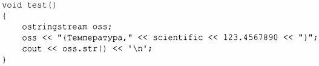
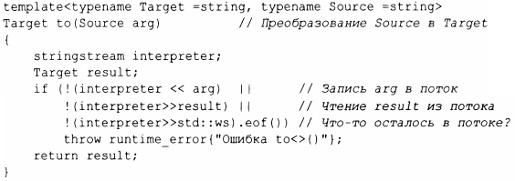
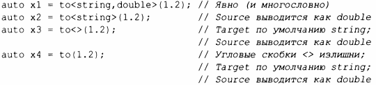

⇐10.7 Файловые потоки 10.9 Ввод-вывод в стиле С⇒
В заголовочном файле <sstream> стандартная библиотека предоставляет потоки для записи в строку string и чтения из нее:
Например:
Результат из ostringstrearn можно прочитать с помощью функции str (). Одно распространенное использование ostringstream заключается в форматировании строки перед передачей ее графическому интерфейсу. Аналогично строка, полученная от графического интерфейса пользователя, может быть прочитана с использованием форматированных операций ввода (§10.3) путем ее помещения в поток istringstream.
Строковый поток stringstream может использоваться как для чтения, так и для записи. Например, мы можем определить операцию, которая может преобразовывать любой тип со строковым представлением в другой, который также может быть представлен как string:
Аргумент шаблона функции должен быть явно указан только в том случае, если он не может быть выведен или если для него нет значения по умолчанию (§7.2.4), поэтому мы можем написать
Если все аргументы шаблона функции берутся по умолчанию, угловые скобки <> могут быть опущены.
Я считаю это хорошим примером общности и простоты использования, которые могут быть достигнуты за счет сочетания возможностей языка и средств стандартной библиотеки.